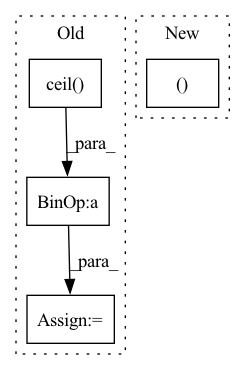

Pattern ID :41031

Before Change
h, w = img_meta["img_shape"][:2]
padded_h = int(
np.ceil(h / self.coarsest_stride) * self.coarsest_stride)
padded_w = int(
np.ceil(w / self.coarsest_stride) * self.coarsest_stride)
padded_img_shapes.append((padded_h, padded_w))
// generate anchors for different feature levels
// len = feature levels
After Change
multi_level_flags = []
for i in range(num_levels):
anchor_stride = self.anchor_strides[i]
feat_h, feat_w = featmap_sizes[i]
h, w, _ = img_meta["pad_shape"]
valid_feat_h = min(int(np.ceil(h / anchor_stride)), feat_h)
valid_feat_w = min(int(np.ceil(w / anchor_stride)), feat_w)
In pattern: SUPERPATTERN
Frequency: 3
Non-data size: 4
Instances
Fragment ID: 115723911
Project Name: wxinlong/solo
Commit Name: 0401cccd2d95eadb83813b6903e5792777f0dea7
Time: 2018-09-25
Author: chenkaidev@gmail.com
File Name: mmdet/models/rpn_heads/rpn_head.py
M Class Name: RPNHead
N Class Name: RPNHead
M Method Name: get_anchors(3)
N Method Name: get_anchors(3)
M Parent Class: nn.Module
N Parent Class: nn.Module
M File Name: mmdet/models/rpn_heads/rpn_head.py
N File Name: mmdet/models/rpn_heads/rpn_head.py
M Start Line: 73
M End Line: 101
N Start Line: 94
N End Line: 121
'>
Before Change
@with_context()
def mix(ctx: Context, inp: jnp.ndarray) -> jnp.ndarray:
original_shape = inp.shape
items = math.ceil(math.log(ctx.dims.sequence, ctx.dims.spatial_mixing_kernel))
samples = 2 ** (int(math.log2(ctx.dims.sequence)) // items)
inp = inp.reshape(ctx.dims.batch, -1, ctx.dims.spatial_mixing_kernel, ctx.dims.features)
inp = inp.transpose(0, 3, 1, 2)
shape = [ctx.dims.batch, ctx.dims.features, -1, samples ** (items - 1)]
After Change
inp = inp.transpose(0, 3, 1, 2)
shape = inp.shape
transposed_shape = list(shape)
transposed_shape[3], transposed_shape[2] = transposed_shape[2], transposed_shape[3]
for i, wgt in enumerate(weights):
wgt = wgt * mask
if i != 0:
'>
Fragment ID: 115723905
Project Name: homebrewnlp/homebrewnlp-jax
Commit Name: bfe53eb59aee047d89cd71559ff88ff3db2ff840
Time: 2022-08-31
Author: 39779310+ClashLuke@users.noreply.github.com
File Name: src/model/mixer.py
M Class Name: AnonimousClass
N Class Name: AnonimousClass
M Method Name: mix(2)
N Method Name: mix(2)
M Parent Class:
N Parent Class:
M File Name: src/model/mixer.py
N File Name: src/model/mixer.py
M Start Line: 15
M End Line: 31
N Start Line: 15
N End Line: 36
'>
Before Change
up = np.random.rand(N, 1)
if sparse_variables_1 > 0:
if sparse_variables_1 < 1:
sparse_variables_1 = np.ceil(sparse_variables_1 * N).astype("int")
up[np.random.choice(np.arange(N), N - sparse_variables_1, replace=False)] = 0
vp = np.random.rand(M, 1)
if sparse_variables_2 > 0:
if sparse_variables_2 < 1:
sparse_variables_2 = np.ceil(sparse_variables_2 * M).astype("int")
vp[np.random.choice(np.arange(M), M - sparse_variables_2, replace=False)] = 0
gaussian_x = np.random.normal(0, eps, (m, N))
gaussian_y = np.random.normal(0, eps, (m, M))
X = np.outer(z, up)
Y = np.outer(z, vp)
X += gaussian_x
Y += gaussian_y
return X, Y, up, vp
After Change
view += gaussian_x
views.append(view)
true_features.append(weights)
return views, true_features
class CCA_Dataset(Dataset):
'>
Fragment ID: 115723918
Project Name: jameschapman19/cca_zoo
Commit Name: 6e0c61ce1ab34a95c67f794aefa73814ef633df0
Time: 2021-04-27
Author: james.chapman.19@ucl.ac.uk
File Name: cca_zoo/data.py
M Class Name: AnonimousClass
N Class Name: AnonimousClass
M Method Name: generate_simple_data(4)
N Method Name: generate_simple_data(6)
M Parent Class:
N Parent Class:
M File Name: cca_zoo/data.py
N File Name: cca_zoo/data.py
M Start Line: 327
M End Line: 361
N Start Line: 98
N End Line: 123